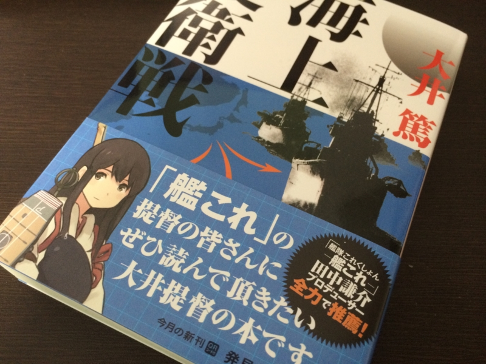

『海上護衛戦』
執筆日時：
")
- 作者: 大井篤
- 出版社/メーカー: KADOKAWA/角川書店
- 発売日: 2014/05/24
- メディア: 文庫
- この商品を含むブログ (3件) を見る
“艦これ”人気にあやかって復刊されたことで話題になった本。

“艦これ”全面押しの帯がつけられたことで一部古参のミリタリーマニアから反発を買ったようだけど、とるに足らないことだと個人的には思った。これは割かしいい本で、いろんな人に読んでほしい本だ。キッカケが何であろうと、復刊され、Kindle になって、より多くの人の目に触れるようになったことは喜ばしいことだと思う。
たとえば、三国志ファンの間などでも正史派 vs 演義派の争いがあるが、どちらも相手なしには成り立たない、唇歯輔車、もちつもたれつなところがある。正史だけではヒトは寄ってこないし、演義だけでは単なるファンタジーに過ぎない。演義がなければ無味乾燥だが、正史がなければ薄っぺらい。太平洋戦争に関することでも同様に、プラモデルファンもいれば映画から入った人もいる。仮想戦記が好きな人もいれば、『大戦略』がキッカケだという人もいていいと思う。そういういろいろなバックグラウンドの人が集まるから、その場が楽しくなる。論争も起こるのだが。
ただ、ひとこと言わせてもらえるならば、俺は本の帯が嫌いだ。あれを書いてるやつは死ねばいいのにとさえ思う。
帯をきっかけに本をレジへもっていったことは、ただの一度もない。購買意欲が失せ、手に取った本をそっと戻したことなら何度でもあるが。本を買ったら帯は速攻破り捨てる。でなければしおり代わりにする。だれが好きでもない人間の推薦を受けた本を読もうなど思うものか。薄っぺらい賞賛の言葉に踊らされるなんて真っ平だ。
純粋に・自発的な知的好奇心で手に取ったつもりが、その実、商業主義に乗せられただけだと気付かされるような、そんな不快感を帯には感じる。だから、一部のミリタリーマニアが反発する気も少し理解できるような気もする。俺は赤城さんが好きだ。愛してる。けれど、この本の帯にはなくていい*1。
さてさて。本の内容について――と思ったけど、割かし憂鬱な内容だったので……読みたい人は読んで。当時の日本はアメリカに100回挑んだとしても、1度たりとも勝てなかったろう。ただでさえ国力が劣っているのに、それを有効活用しようとすることさえ怠っていた。
日本海軍は、端的にいえば“びんぼっちゃま”だった。立派な服を着ているが、それは前面だけで、背面は素っ裸という奴。一張羅の連合艦隊を充実させることに力は注いでも、海上護衛という下着の替えにはまったく気を配らなかった。一度上着が破れたら、あとは素っ裸で殴られるだけの話だ。
「これはクラウゼビッツが戒めているコルドン（単線配備）という奴で、危ない配備ですな」
日本は日清戦争・日露戦争をその危ない配備で勝ちを拾ってしまったがためか、その方法に執着してしまった（海軍も、陸軍も！）。
「信濃」を建造する資材で海防艦をもっと充実させ、第二線の防御・海上輸送路の護衛を強化していれば？*2 戦闘機の生産にあてていれば？*3 裏地に気を遣うのを怠ったせいで、勝利の女神に愛想をつかされた格好だ。
艦隊決戦の美学も、負けてしまえば空しい。アメリカは真珠湾攻撃以来、ずっと潜水艦による「無制限」の攻撃を指示していたらしいが、日本は民間船の攻撃を避け、潜水艦をあくまで艦隊決戦に使うことに固執した。その結果、日本は船腹の半分近くを潜水艦の雷撃で失った。一方、日本海軍の潜水艦は艦隊決戦ではなく輸送に用いられ、一艦一艦、敵の航空機や水上艦艇によって、遠い南洋で誰にも知られず嬲り殺された。
とはいえ、そうやって連合艦隊へ裂くリソースを削って後方に回しても、それはそれで早期決戦・早期講和に持ち込める確率は減るわけだから、戦争に勝てたというわけではないけれど。どっちにしろ、あの戦争は無謀でしかなかったのかもしれない。
追記
自衛隊の軍備は「海上護衛」を考えた構成になっているのだろうか。島嶼奪回も結構だけれど、たとえば中国と戦争になれば当然通商破壊をやってくるだろうが、通商ルートの策定と防衛はどのようになっているのだろう？ 自分が軍事オンチなのでよくわからないが、そう考えてみると本書の現代的意味は割と大きいのではないかと思わないでもない。